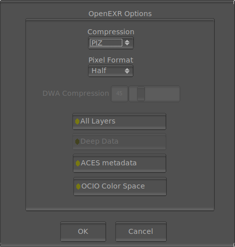

The File Save OpenEXR Options

The File Save OpenEXR options allows you to select options of how mrViewer saves the OpenEXR image(s). The window appears whenever you save a file with extension .exr.
The Requester allows you to select the compression algorithm. The lossless compression algorithns are: None, RLE, ZIP, ZIP Scanline, PIZ Wavelet. The lossy compression algorithms are B44, B44A DWAA and DWAB.
For the DWAA/DWAB algorithms, it is possible to select the quality/ratio of the compression. That is the slider below the compression options.
Besides the compression algorithm, you can also select the pixel depth, which can be unsigned integer, half float or full float. For most cases Half will be enough.
OpenEXR supports multiple layers and selecting saving all layers will allow you to save all layers of the image loaded. mrViewer saves an OpenEXR v2.0 multipart file for speed.
Finally, you can choose to save the ACESclip Metadata (all CTL transforms) into a similarly named file to your OpenExr file. This file will be read in automatically once you load the OpenEXR file or sequence.